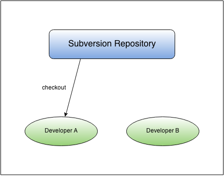
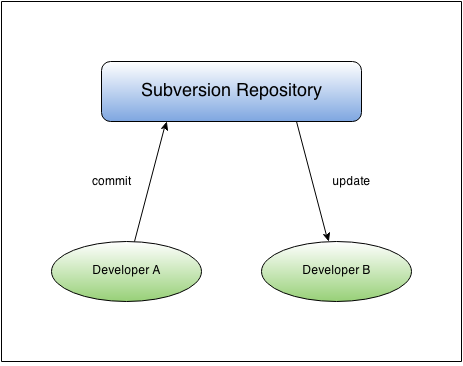
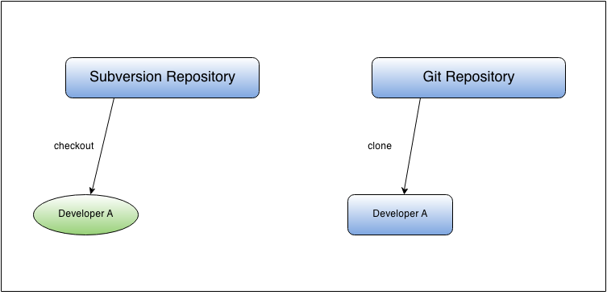
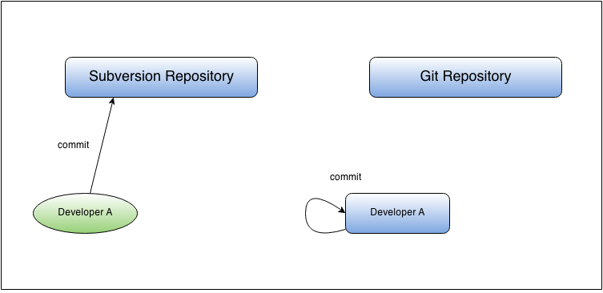
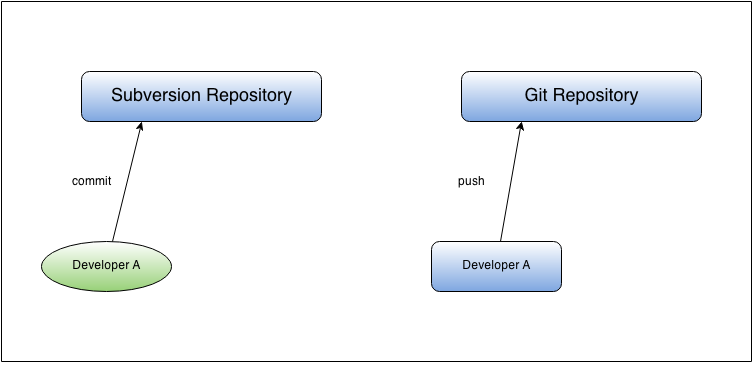
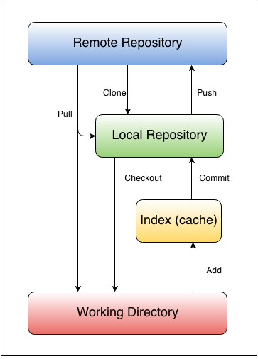

Moving to GIT
For SVN users
Created by KH Chan
Agenda
Learn about Git and DVCS
Learn about differences between svn and git
Development workflow with git
Assumptions
- You know what is svn and Subversion
- You are a Subversion user
- You know the svn commands
What is CVCS?
CVCS - Centralized Version Control System
- CVS
- Subversion
- Perforce

What is DVCS?
DVCS - Distributed Version Control System
- Git
- Mercurial
- Bazaar
- Darcs

Let's review some Subversion workflows
Initial Checkout

Commit and Update

Alright, let's see the commands
Initial Checkout
Subversion
svn checkout http://some.repository/repo
Git
git clone http://some.repository/repo.git
Initial Checkout

Differences between checkout and clone
Subversion
- keeps a copy of the last revision of the repo
Git
- keeps a copy of the entire repo
Adding a file
Subversion
svn add path/to/file
Git
git add path/to/file
Differences for adding
Subversion
- used for adding new files
Git
- used for adding new files AND
- recording modification to existing files
- able to choose hunks of patches to add with -p
git add -p path/to/file
Status
Subversion
svn st -OR- svn status
Git
git status
Differences for status
Subversion
- tracks unversioned, new, deleted, modified files
Git
- tracks unversioned, new, deleted, modified, modified but not 'add'-ed files
Committing
Subversion
svn commit
svn commit -m "commit message"
svn commit path/to/file
Git
git commit
git commit -m "commit message"
git commit path/to/file
Committing

Differences for committing
Subversion
- sends changes to remote repository
- revision number is incrementing integer
Git
- only commits to local repository
- revision number is hash of the commit
Pushing to remote repository
Subversion
- code is pushed when committing
Git
git push
Pushing to remote repository

Reverting
Subversion
svn revert path/to/file
Git
git checkout path/to/file
Updating
Subversion
svn update
Git
git pull
Updating
GIT commands you must know
- git clone
- git add
- git status
- git commit
- git push
- git checkout
- git pull

More advanced GIT
- git stash
- git branch
- git merge
Using GIT Stash
SVN
# svn diff > changes.diff
# svn revert -R .
GIT
# git stash
OR
# git stash save
Branching and Merging
Git Flow
 Reference: http://nvie.com/posts/a-successful-git-branching-model/
Reference: http://nvie.com/posts/a-successful-git-branching-model/
Setting up your Git environment
# Your identity
$ git config --global user.name "KH Chan"
$ git config --global user.email "khchan@maaii.com"
# Your editor
$ git config --global core.editor vim
# Check your settings
$ git config --list
user.name=KH Chan
user.email=khchan@maaii.com
color.status=auto
color.branch=auto
color.interactive=auto
color.diff=auto
...
Gerrit Code Review
http://sourcecontrol.maaii.com:9080
References
-
Pro Git
(http://git-scm.com/book) -
A successful Git branching model
(http://nvie.com/posts/a-successful-git-branching-model/) -
Learn Git Branching
(https://pcottle.github.io/learnGitBranching/) -
Atlassian Git Tutorials
(https://www.atlassian.com/git/tutorial/git-basics) -
git ready
(http://gitready.com)